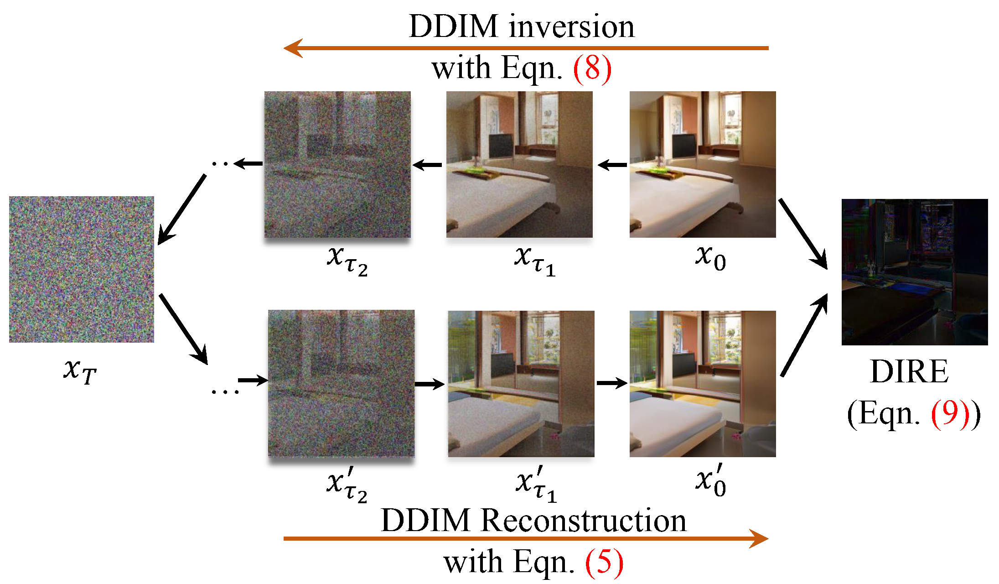
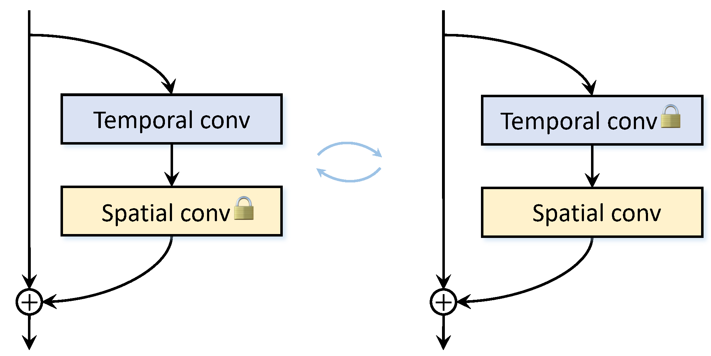
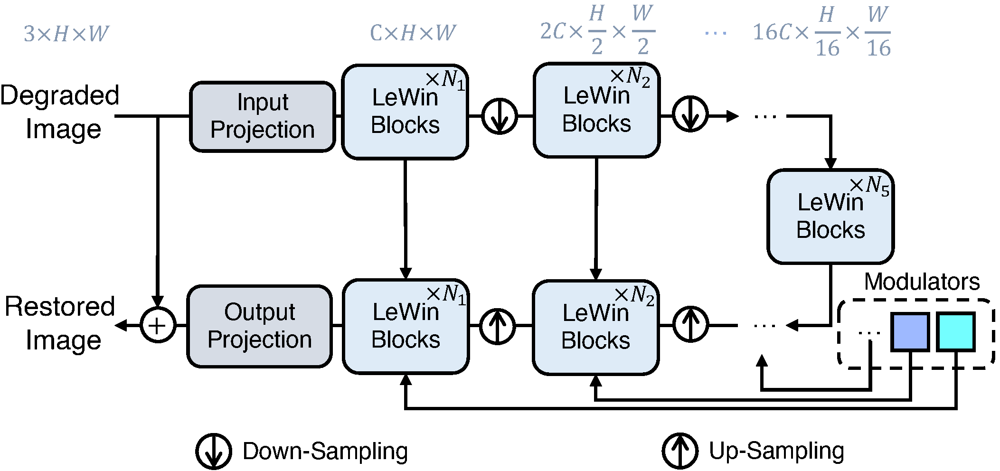

|
I am a PhD student in the School of Computing at KAIST, advised by Prof. Sung-Eui Yoon, working in the Scalable Graphics, Vision, & Robotics Lab. I earned my BS and ME in Computer Science and Engineering from Chung-Ang University, researching under Prof. Junseok Kwon in the Computer Vision Machine Learning Lab. I have also interned at LG AI Research. |

|
Recent News
Research Experience
Publications (* indicates equal contribution)
|  |
UFORecon, a robust view-combination generalizable surface reconstruction under arbitrary and unfavorable input views. |
|  |
|
|  |
|
Awards and Honors
Academic Services
|
Modified from Ze Liu and Jon Barron. |